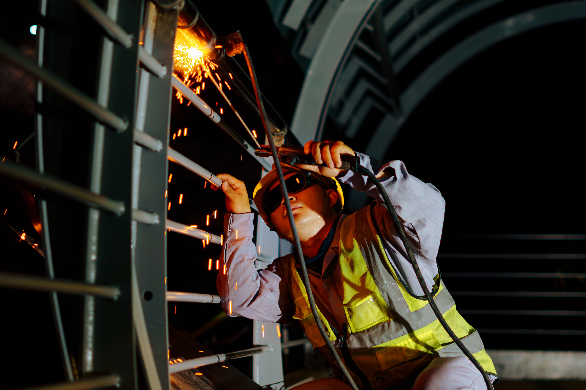

NUESTROS SERVICIOS
6 DISCIPLINAS DE INGENIERÍA INTEGRADA
CEPICA ofrece servicios integrales de consultoría e ingeniería a través de 6 disciplinas técnicas especializadas, cubriendo el ciclo EPC completo: desde estudios de factibilidad hasta supervisión de construcción y comisionamiento.
Nuestro equipo multidisciplinario opera con los más altos estándares de calidad, seguridad y cumplimiento normativo, proporcionando soluciones de ingeniería de valor para la industria petrolera, petroquímica y energética de Venezuela.
Ingeniería Civil
Diseño y cálculo de obras civiles, cimentaciones, edificaciones y estructuras metálicas para plantas de proceso e instalaciones industriales, integrando criterios de constructibilidad y mantenimiento.
Alcance
- Diseño estructural de edificaciones industriales
- Cimentaciones para equipos estáticos y rotativos
- Estructuras metálicas y soportería de tuberías
- Obras de drenaje, vialidad y urbanismo industrial
- Estudios de suelos y geotecnia
- Supervisión de construcción civil
Entregables
- Planos estructurales y de detalle
- Memorias de cálculo
- Especificaciones técnicas de construcción
- Cómputos métricos y presupuestos
- Informes de inspección de obras
Normas Aplicadas
[COMPLETAR: normas de ingeniería civil]

Ingeniería Eléctrica
Diseño de sistemas de potencia, distribución, subestaciones, iluminación industrial y protección para instalaciones críticas del sector petrolero y energético.
Alcance
- Diseño de sistemas de distribución eléctrica
- Subestaciones y tableros de media y baja tensión
- Sistemas de puesta a tierra y protección contra descargas atmosféricas
- Iluminación industrial y de áreas clasificadas
- Estudios de cortocircuito, coordinación de protecciones y flujo de carga
- Clasificación de áreas peligrosas
Entregables
- Diagramas unifilares y trifilares
- Planos de canalizaciones eléctricas y ruteo de cables
- Listas de cables, equipos y materiales
- Estudios eléctricos (cortocircuito, selectividad, arranque de motores)
- Especificaciones de equipos eléctricos
Normas Aplicadas
[COMPLETAR: normas de ingeniería eléctrica]

Instrumentación y Automatización
Diseño e integración de sistemas de control distribuido (DCS), controladores lógicos programables (PLC), instrumentación de campo, lazos de control, SCADA y automatización de procesos industriales.
Alcance
- Arquitectura de sistemas de control (DCS/PLC/SCADA)
- Selección y especificación de instrumentos de campo
- Diseño de lazos de control y diagramas de interconexión
- Sistemas de parada de emergencia (ESD/SIS)
- Sistemas de detección de fuego y gas
- Programación y configuración de controladores
Entregables
- Diagramas de instrumentación y tuberías (P&ID)
- Hojas de datos de instrumentos
- Diagramas de lazos y de interconexión
- Listas de instrumentos, cables y señales
- Filosofía de control y narrativas de operación
Normas Aplicadas
[COMPLETAR: normas de instrumentación]
Ingeniería Mecánica
Diseño y especificación de equipos a presión, tuberías de proceso, análisis de esfuerzos, sistemas HVAC industrial y equipos mecánicos para la industria petrolera y petroquímica.
Alcance
- Diseño de tuberías de proceso y servicios
- Análisis de esfuerzos y flexibilidad de tuberías
- Especificación de recipientes a presión, intercambiadores y bombas
- Diseño de soportería de tuberías
- Estudios de selección de materiales
- Modelos 3D de plantas y recorridos virtuales
Entregables
- Planos isométricos y de arreglo general
- Hojas de datos de equipos mecánicos
- Listas de líneas, materiales y accesorios
- Informes de análisis de esfuerzos
- Especificaciones de tuberías (Piping Spec)
Normas Aplicadas
[COMPLETAR: normas de ingeniería mecánica]
Telecomunicaciones
Diseño e implementación de redes de comunicación industrial, sistemas de fibra óptica, radio, telefonía IP y conectividad para instalaciones remotas del sector petrolero y energético.
Alcance
- Redes de comunicación industrial (Ethernet, fieldbus)
- Sistemas de fibra óptica para ambientes industriales
- Radiocomunicaciones y sistemas de radio troncalizado
- Telefonía IP y sistemas de intercomunicación
- CCTV y sistemas de videovigilancia industrial
- Conectividad para instalaciones remotas y satélite
Entregables
- Arquitectura de red y diagramas de bloques
- Planos de ruteo de fibra óptica y cableado estructurado
- Estudios de propagación y cobertura de radio
- Listas de equipos y materiales
- Especificaciones técnicas de equipos de telecomunicaciones
Normas Aplicadas
[COMPLETAR: normas de telecomunicaciones]

Procura y Asistencia Técnica
Gestión integral de compras técnicas, logística de materiales, asistencia en campo y supervisión de construcción para proyectos industriales del sector energético.
Alcance
- Gestión de compras técnicas nacionales e internacionales
- Evaluación técnica de ofertas y proveedores
- Logística y seguimiento de entregas de materiales
- Inspección de materiales y equipos en fábrica
- Asistencia técnica en construcción y montaje
- Supervisión de comisionamiento y arranque
Entregables
- Requisiciones de materiales y equipos
- Tablas de evaluación de ofertas (TBE)
- Órdenes de compra con especificaciones técnicas
- Informes de inspección en fábrica
- Informes de avance de construcción
Normas Aplicadas
[COMPLETAR: normas de procura]
CICLO DEL PROYECTO
Cada proyecto sigue un ciclo estructurado que garantiza calidad, control de costos y cumplimiento de cronogramas.
Factibilidad
Estudios preliminares de viabilidad técnica y económica del proyecto.
Ingeniería Conceptual
Definición del alcance, selección de tecnología y estimados de costos clase V–IV.
Ingeniería Básica
Desarrollo de los documentos base para diseño: P&ID, planos generales, especificaciones.
Ingeniería de Detalle
Planos constructivos, modelos 3D, listas de materiales y documentos para construcción.
Procura
Compras técnicas, evaluación de ofertas, seguimiento de entregas e inspección de materiales.
Construcción
Supervisión de montaje, control de calidad en campo y asistencia en comisionamiento.
SIAHO Y QA/QC EN CADA PROYECTO
SIAHO
Seguridad Industrial, Ambiente e Higiene Ocupacional
Integramos la prevención de riesgos operativos en cada fase del proyecto. Nuestros procedimientos cumplen con las normativas nacionales de seguridad industrial y los estándares de PDVSA. Cada proyecto incluye análisis de riesgos, permisos de trabajo, matrices de responsabilidad y planes de respuesta ante emergencias.
QA/QC
Aseguramiento y Control de Calidad
Protocolos rigurosos de aseguramiento y control de calidad en todos los entregables. Revisiones técnicas independientes, control de documentos, listas de verificación por disciplina y auditorías internas garantizan que cada entrega cumpla con las especificaciones del proyecto y las normas aplicables.
EPC
Ingeniería, Procura y Construcción
Cubrimos el ciclo completo: desde estudios de factibilidad e ingeniería conceptual hasta procura de materiales y supervisión de construcción, con control riguroso de calidad, costo y cronograma en cada etapa.
LA DIFERENCIA ENTRE RIESGO Y GARANTÍA
⚠ Sin CEPICA
- Retrasos críticos por falta de planificación técnica especializada
- Sobrecostos por errores de ingeniería y reprocesos constantes
- Incumplimiento de normativas PDVSA, SIAHO y estándares internacionales
- Descoordinación entre disciplinas que genera interferencias físicas y funcionales
- Riesgos de seguridad por diseños que no contemplan clasificación de áreas
✓ Con CEPICA
- Ejecución precisa con cronogramas respaldados por experiencia comprobada
- Optimización de costos mediante ingeniería de valor y control QA/QC
- Cumplimiento total de normativas nacionales e internacionales
- Integración multidisciplinaria con revisiones cruzadas y modelos 3D
- Protocolos SIAHO integrados desde la ingeniería conceptual
¿NECESITA INGENIERÍA ESPECIALIZADA?
Solicite una consulta técnica sin compromiso. Nuestro equipo evaluará su proyecto y propondrá la solución más eficiente.